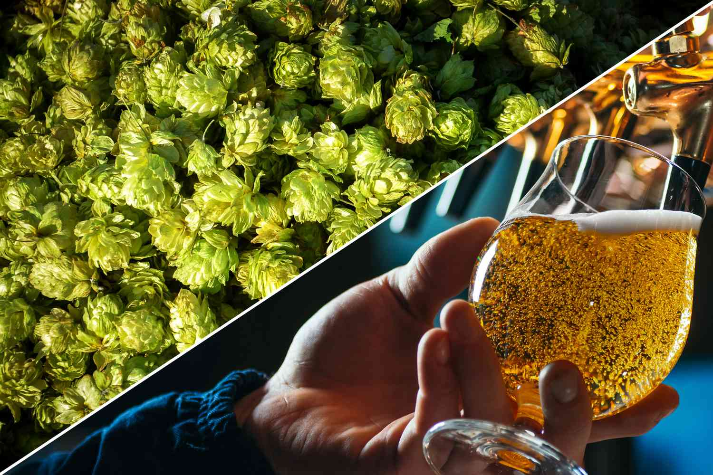

Spend enough time around brewers and you will hear hops spoken about with the reverence usually reserved for terroir in wine. There is good reason for this. The hop plant — Humulus lupulus — is responsible for the single most diverse flavour spectrum of any brewing ingredient. A lupulin-rich Citra cone can smell like passion fruit, mango, and grapefruit all at once. A Saaz hop smells of clean, herbal spice and nothing else. The same species, wildly different characters, grown from slightly different genetics.
The Chemistry of Hop Aroma
Hop aroma is primarily driven by essential oils — volatile organic compounds concentrated in the lupulin glands of the hop cone. The two most important oil fractions are myrcene and the so-called "fine aroma" compounds: linalool, geraniol, and farnesene. Myrcene contributes a raw, resinous, almost diesel-like note in its pure form — not particularly pleasant — but it volatilises rapidly during boiling, which is why most of it burns off in the kettle. The fine aroma compounds survive better and contribute the floral, tropical, and citrus notes that define modern hop-forward beers.
Alpha acids — humulone, cohumulone, and adhumulone — are a separate compound class responsible for bitterness rather than aroma. They are chemically insoluble in wort until isomerised by heat during the boil, at which point they become iso-alpha acids and create the perceived bitterness we measure in IBUs. Varieties bred for high alpha acid content are primarily used as bittering additions; varieties prized for their oil profile are used for late kettle and dry hopping.
"If you can smell the difference between Mosaic and Citra blind, you are already thinking like a brewer." — Sara Reeves, Head Cicerone
The Classic American Trio
Cascade, Centennial, and Chinook — the "Three Cs" — define the American craft beer revolution of the 1980s and 90s. Cascade, released in 1972 and popularised by Sierra Nevada Pale Ale, delivers a distinctive grapefruit and floral character that remains one of the most recognisable hop aromas in the world. It was derived from a cross of English Fuggle and a wild male from Utah — which makes its grapefruity character all the more surprising given its parentage. Centennial is sometimes called "super Cascade" — higher alpha acids (9–11% vs Cascade's 5–7%), more intense citrus, and a cleaner bitterness profile. Chinook brings pine resin and a distinctive spiced, smoky undertone that makes it useful as a bittering hop or for adding structural depth to a dry hop blend.

The Modern Era: Citra and Mosaic
No two hops have done more to redefine what modern beer smells like than Citra and Mosaic. Citra, released by the Hop Breeding Company in 2007, carries unusually high levels of geraniol and linalool that produce an unmistakable tropical fruit blast — passion fruit, mango, and key lime in its freshest form. It is one of the most widely used hops in craft brewing globally, appearing in everything from session IPAs to hazy NEIPAs to sour fruited ales where its aromatics amplify fruit additions. Mosaic, a Citra offspring released in 2012, is arguably even more complex in isolation: blueberry and stone fruit dominate, with a secondary layer of earthy pine that prevents it from tipping into candy territory.
Quick Reference: 8 Key Varieties
- Citra: Tropical fruit — passion fruit, mango, key lime. High geraniol, myrcene.
- Mosaic: Blueberry, stone fruit, earthy pine. Citra's more complex offspring.
- Simcoe: Pine resin, apricot, dank. Superb dual-use (bittering + aroma).
- Cascade: Grapefruit, floral — the definitive American craft hop.
- Centennial: Citrus-forward, clean bitterness. Cascade with more intensity.
- Saaz: Noble spice, herbal, earthy. Defines Czech pilsner.
- Nelson Sauvin: White wine, gooseberry, distinctive. New Zealand's showstopper.
- Hallertau Blanc: Passionfruit, grapefruit — German-grown but American-spirited.
Noble Hops and the Old World
While American brewers were building the craft revolution on Cascade and Chinook, European brewers had been quietly growing four "noble" varieties for centuries: Saaz (Czech Republic), Hallertau Mittelfrüh (Germany), Spalter (Germany), and Tettnang (Germany and Austria). These varieties share low alpha acid content — typically 2–5% — and a refined, spicy, herbal character that defines German lager and Czech pilsner. They are not dramatic. They are not tropical. They are precise, restrained, and almost impossible to use badly — which is why they have persisted for centuries in the world's most consistent beer styles. The terroir argument for hops is most compelling here: genuine Saaz grown in the Žatec region of Bohemia has a distinctly different character from the same cultivar grown in Germany or the Pacific Northwest, due to differences in soil composition, day length, and average temperature.
New World Varieties and the Future
Australia and New Zealand have quietly produced some of the most exciting hop breeding programs of the last twenty years. Nelson Sauvin — named for its wine-like character reminiscent of Sauvignon Blanc — is unlike anything grown in either the US or Europe, and has catalysed a whole sub-genre of wine-influenced pale ales. Galaxy, from Australia, delivers a tropical fruit intensity that rivals Citra with a distinctive passionfruit-and-peach note. Riwaka brings lime and grapefruit in a different register than American citrus varieties. These Southern Hemisphere varieties have fundamentally expanded what brewers can achieve aromatically.